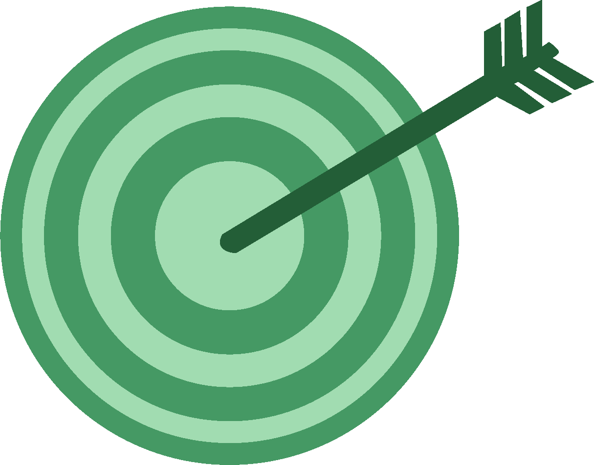
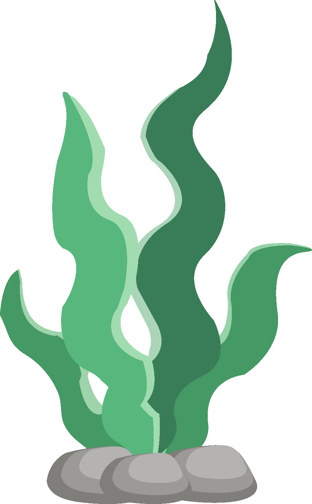
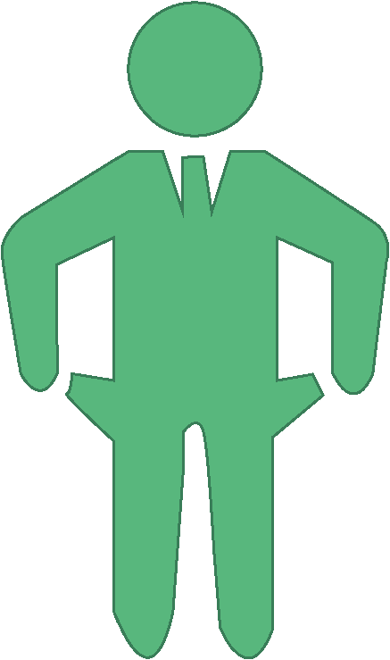

The Dutch Weed Burger
The Weed Burger was een bedrijf dat veganistische burgers die gemaakt waren van zeewier op de markt bracht. Veganistische burgeropties zijn zeer belangrijk omdat ze een alternatief bieden voor de vleesindustrie. De vleesindustrie is namelijk een van de factoren die het opwarmen van onze planeet versnelt. Als er veganistische opties zijn die even lekker smaken, zouden mensen mogelijk overstappen naar plantaardige alternatieven die minder dierenleed veroorzaken en onze planeet niet verder vernietigen.
Missie
The Dutch Weed Burger zag zichzelf als een rebel binnen de voedingsindustrie. Hun doel was niet alleen winst maken, maar ook bijdragen aan het verbeteren van de planeet en het verminderen van dierenleed. In plaats van weg te kijken, zoals velen doen, wilden zij juist actie ondernemen. Ze kozen ervoor om met hun plantaardige producten mensen bewust te maken van het verschil dat hun voedselkeuzes kunnen maken. The Dutch Weed Burger wilde in harmonie leven met de natuur en alle dieren, daarom streefden ze ernaar om dierenleed zoveel mogelijk te vermijden. Zeewier speelde een grote rol in hun producten. Voor hen was de zee een bron van leven en inspiratie. Ze beschouwden zeewier als een duurzaam ingrediënt dat de oceaan respecteert. Zelf vind ik dit een prachtige parallel, want als we de planeet niet respecteren en er niet goed voor zorgen, zou de mensheid in de toekomst door natuurkrachten kunnen worden uitgeroeid.
Zeewier
Het zeewier dat The Dutch Weed Burger gebruikt, groeit bij de duurzame zeewierboerderij Zeewaar en wordt met de hand geplukt. Door zeewier als voornaamste bron van eiwitten te gebruiken, kunnen we het ecosysteem ontlasten: de impact van de vlees- en zuivelindustrie verkleinen, duizenden liters vers water besparen en duizenden hectaren grond die nu voor veeteelt wordt gebruikt herstellen. Volgens wetenschappers kan de wereldwijde eiwitbehoefte worden vervuld door zeewier te telen op een oppervlakte van slechts drie keer de grootte van Portugal. Daarom kiezen ze bij The Dutch Weed Burger voor zeewier als eiwitbron. Mits duurzaam geteeld, is het goed voor de planeet, goed voor de mens en goed voor de dieren.
Faillissement
Helaas is The Dutch Weed Burger, ondanks hun nobele visie, gestopt. Ik vind dit jammer, omdat het een Nederlands bedrijf was dat duurzame, gezonde producten maakte die goed waren voor onze planeet. Toen ik onderzoek deed naar het bedrijf, viel me op dat hun producten nergens meer te koop waren, terwijl ik ze in het verleden nog in de schappen had zien liggen. Ik besloot verder te zoeken en kwam uit op hun Instagram-pagina, waar ik las dat Albert Heijn had besloten om de producten van The Dutch Weed Burger niet langer te verkopen. De hoge kosten maakten het voor het bedrijf te duur om in de schappen te blijven, en omdat de productie hierdoor te kleinschalig werd, besloten ze te stoppen.
Dit leidde uiteindelijk tot het faillissement van het bedrijf. Toch wil ik niet op een sombere toon eindigen. Ondanks dat The Dutch Weed Burger niet meer bestaat, leeft hun visie voort. We kunnen zelf bijdragen door een meer plantaardig dieet aan te nemen. Zelfs als we niet volledig veganistisch willen gaan, kunnen we overwegen om minder vlees te eten per week, zoals ik nu ook doe. Op die manier kunnen we een stap zetten tegen de vlees- en zuivelindustrie, die onze planeet langzaam vernietigt. Vergeet niet: elke kleine bijdrage telt, en misschien inspireren we zo ook anderen om groener te leven. Hieronder een link naar de website van The Dutch Weed Burger.
Bezoek Website